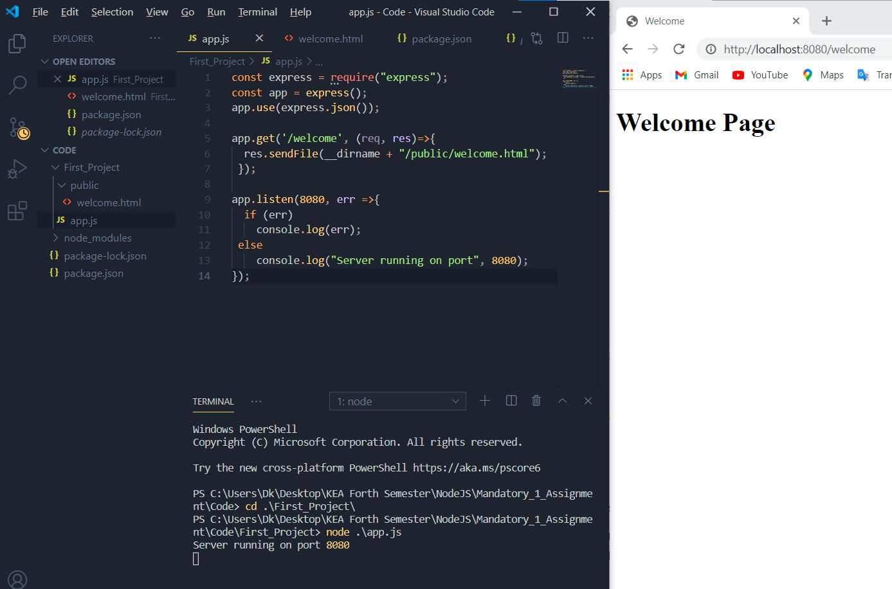
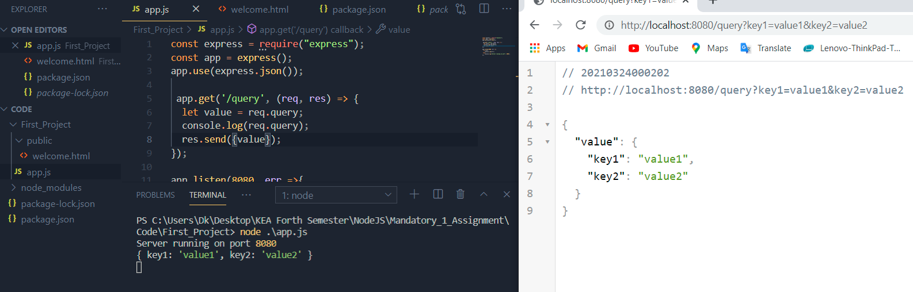
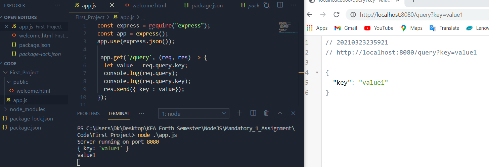
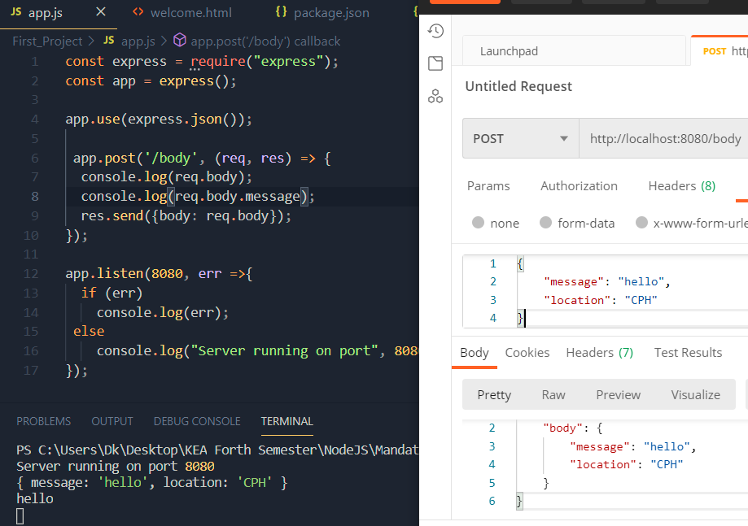

Introduction to Express

Express.js, or simply Express is a fast, unopinionated and minimalist web framework for Node.js. It is designed for building web applications and APIs. It has been called the de facto standard server framework for Node.js. We can install it through npm by writing this command in the terminal:
$ npm install express
Working With Express
With Express we can set up a Web Server. To do that, we can add the following code in our app.js:
const express = require("express"); // The whole library is saved, and can be used later
const app = express(); // We instantiate express and create the application server
app.use(express.json()); // We enable Express to parse the body of our http methods (done by using built-in body-parser)
app.listen(8080, err =>{ // We set the port express listens at. In case we get an error, it will be displayed
if (err)
console.log(err);
else
console.log("Server running on port", 8080);
});
We run the program with node app.js and we can see the result
Sending JSON
For our first example we will create A REST API. Our web browser (which acts as a client) will request a resource and our backend will handle the request and will send back the response through Express. The response can be sent as json, html pages, etc
Add the following code into our app.js file
app.get("/hello", (req, res) => {
res.send({ message: "Hello there" });
});
We initialize the GET method. So app.get() is the route handler/event handler/route. It has two parameters:
endpoint("/welcome")callback, which is a arrow function. It takes as parameters the request(req) and response(res) and sends back a response as json, html pages, etc usingres.send()method
We use res.send() or res.json() methods to send back data/response to the client. Both methods work almost the same, more info can be found here
We test the application with node app.js in the terminal and get the following result:
Sending HTML pages
To serve an HTML file, we use sendFile(__dirname + html_page_route) method
__dirname is the directory path for where the Node runs app.js file.
Folder that stores the html pages in Express is called "public"
app.get('/welcome', (req, res)=>{
res.sendFile(__dirname + "/public/welcome.html");
});

Working With HTTP Requests using Express
HTTP Request consists of:
- HTTP Method
- URL
- HTTP Headers
- HTTP Body
- Accept Header (content negotiation)
- User Agent
HTTP Response consists of:
- Status Code
- Headers
- Body
- Content Length
- Content Type
More information can be found here and here
Working with URL
When working with URL, Express helps us access:
- Path Variables
- Query Parameters (also called Query Strings)
In the example below:
- 3, today -- path variables
- name=Alex&course=Physics -- query parameters
localhost:8080/day/today/3?name=Alex&course=Physics
Path Variables
We have dynamic content through path variables. We can have multiple path variables, not just one (they are separated by /)
>We define path variables through colon (:) and variable name and can access them through req.params which returns an object with the name we defined, and value
Query Parameters
We can access the query parameters through req.query -- the req object has query property. This property returns the query parameters as objects
Path variables are added at the end of URL, after ?. We can have multiple path variables, not just one (they are separated by &)
If the name of the provided key is known, then we can use it to access the value from the query parameter
HTTP Body Request
Before, to work with the request bodies, the body-parser module had to be included. Express couldn't work with body but default.
Now body-parser is included in Express. So to work with incoming request bodies, we write app.use(express.json()); in app.js file
So if we send something in body of the request, we can work with it by accessing req.body property.
And we can access they values separately, as well, if we know the keys
